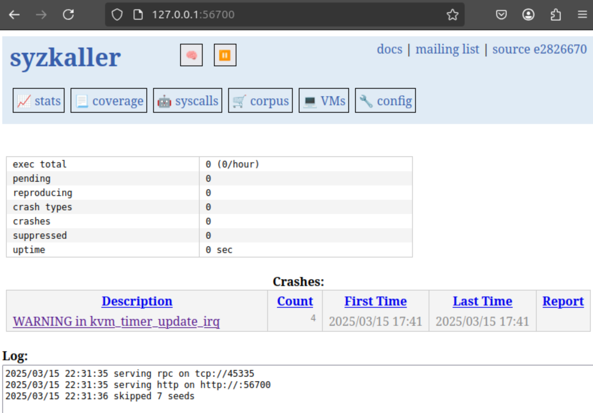
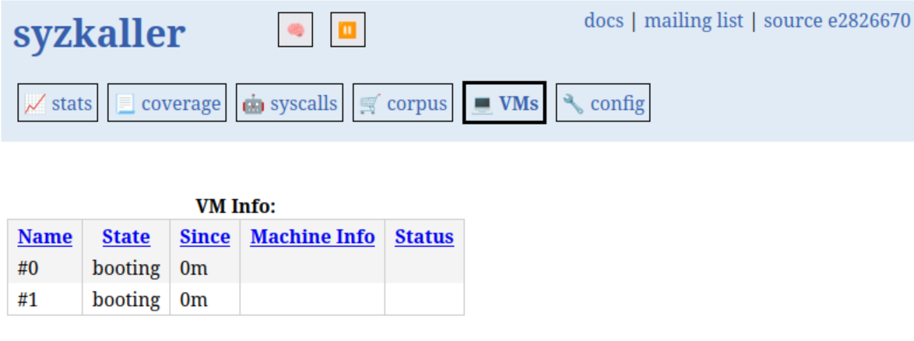

Syzkaller环境搭建
记录一下环境配置的踩坑过程。
本次配置完成了Syzkaller的环境搭建，目标测试平台为arm64，采用syzkaller + qemu + linux arm64的方式进行测试。
本教程写于2025年3月，可能具有一定的时效性。
1. 环境准备
1.1. 系统环境
- Ubuntu 24.04 LTS
- Vmware Workstation 17.x Pro
- Windows 11
下载一个Ubuntu 24.04 LTS的镜像，然后在Vmware Workstation 17.x Pro中安装，保证新虚拟机的纯净性。
1.2. 安装必要软件
| Bash |
|---|
| sudo apt update
sudo apt upgrade
sudo apt install git gcc g++ make
|
仅下载以上软件并不足以搭建Syzkaller环境，其他的软件在后续的步骤中安装。
2. 环境搭建
2.1. 安装Go语言
syzkaller教程中给的链接指向的是Go 1.22.1，但在后续安装syzkaller时，它又在syzkaller的目录中下载了Go 1.23.6。所以安装两个版本中任意一个即可。
| Bash |
|---|
| wget https://golang.org/dl/go1.22.1.linux-amd64.tar.gz
tar -zxvf go1.22.1.linux-amd64.tar.gz
|
获取安装包不顺利的话可以使用代理或者在主机上下载后传输到虚拟机中。代理可以通过命令行设置：
| Bash |
|---|
| export http_proxy=http://127.0.0.1:7890
export https_proxy=http://127.0.0.1:7890
|
把 127.0.0.1:7890替换为你的代理地址。以我的代理为例，我在主机上使用clash代理，端口为7890，设置主机在虚拟机的子网地址为 192.168.199.1，因此在虚拟机中设置代理为 http://192.168.199.1:7890。
把GO路径加入到环境变量中：
| Bash |
|---|
| export GOROOT=`pwd`/go
export PATH=$GOROOT/bin:$PATH
|
把上面的两行命令加入到 ~/.bashrc文件中，然后执行 source ~/.bashrc。注意要把 pwd替换为你的 go目录的绝对路径。
2.2. 安装Syzkaller
| Bash |
|---|
| git clone https://github.com/google/syzkaller
cd syzkaller
make
|
make的过程会自动下载Go 1.23.6，所以不用担心之前安装的Go版本是否正确。在没有参数的情况下，make会自动编译amd64的版本，如果要编译arm64的版本，可以使用 make TARGETOS=linux TARGETARCH=arm64。
由于我要安装的是arm64的版本，所以使用了 make TARGETOS=linux TARGETARCH=arm64。
这个过程报错，需要安装 gcc-aarch64-linux-gnu，使用官方提供的gcc-linaro-6.3.1-2017.05-x86_64_aarch64-linux-gnu会报错，连续更换了四个版本的gcc-linaro都没办法解决问题，最后使用了官方的包管理器下载解决了问题。
| Bash |
|---|
| sudo apt install gcc-aarch64-linux-gnu
sudo apt install g++-aarch64-linux-gnu
|
2.3. 安装QEMU
我选择使用源码编译的方式安装QEMU：
| Bash |
|---|
| git clone https://gitlab.com/qemu-project/qemu.git
cd qemu
mkdir build
cd build
../configure
# configure的时候会提示缺少的依赖，根据提示安装即可，安装完成之后再次执行../configure，直到没有提示
make -j12 #根据CPU核心数选择-j参数
|
编译完成之后，可以在 build目录下找到 qemu-system-aarch64。
2.4. 安装Buildroot
在Buildroot下载所需版本，我选择了2024.02.11版本。
| Bash |
|---|
| wget https://buildroot.uclibc.org/downloads/buildroot-2024.02.11.tar.gz
tar -zxvf buildroot-2024.02.11.tar.gz
cd buildroot-2024.02.11
make menuconfig
|
在 menuconfig中选择：
| Text Only |
|---|
| Target options
Target Architecture - Aarch64 (little endian)
Toolchain type
External toolchain - Linaro AArch64
System Configuration
[*] Enable root login with password
( ) Root password = set your password using this option
[*] Run a getty (login prompt) after boot --->
TTY port - ttyAMA0
Target packages
[*] Show packages that are also provided by busybox
Networking applications
[*] dhcpcd
[*] iproute2
[*] openssh
Filesystem images
[*] ext2/3/4 root filesystem
ext2/3/4 variant - ext3
exact size in blocks - 6000000
[*] tar the root filesystem
|
然后保存退出，执行 make。完成之后，可以在 output/images目录下找到 rootfs.ext3。
2.5. 编译内核
下载自己需要的内核版本，然后运行：
| Bash |
|---|
| ARCH=arm64 CROSS_COMPILE=aarch64-linux-gnu- make defconfig
vim .config
|
在 .config文件中修改以下内容：
| Text Only |
|---|
| CONFIG_KCOV=y
CONFIG_KASAN=y
CONFIG_DEBUG_INFO=y
CONFIG_CMDLINE="console=ttyAMA0"
CONFIG_KCOV_INSTRUMENT_ALL=y
CONFIG_DEBUG_FS=y
CONFIG_NET_9P=y
CONFIG_NET_9P_VIRTIO=y
CONFIG_CROSS_COMPILE="aarch64-linux-gnu-"
|
里面的部分内容有的可能已经存在，有的可能需要手动添加。
然后执行：
| Bash |
|---|
| ARCH=arm64 CROSS_COMPILE=aarch64-linux-gnu- make -j12
|
编译完成之后，可以在 arch/arm64/boot目录下找到 Image。
2.6. 启动QEMU
| Bash |
|---|
| ./qemu/build/qemu-system-aarch64 -machine virt -cpu cortex-a57 -nographic -smp 1 -hda ./buildroot-2024.02.11/output/images/rootfs.ext3 -kernel ./linux/arch/arm64/boot/Image -append "console=ttyAMA0 root=/dev/vda oops=panic panic_on_warn=1 panic=-1 ftrace_dump_on_oops=orig_cpu debug earlyprintk=serial slub_debug=UZ" -m 2048 -net user,hostfwd=tcp::10023-:22 -net nic
|
上面是我使用的启动命令，其中的参数根据自己的需求进行修改。
2.7. 配置虚拟机
前面在Buildroot中设置了root密码，所以可以使用root登录。
登录后，输入以下命令：
在文件中找到 start)，在 start)下面添加以下内容：
| Bash |
|---|
| ifconfig eth0 up
dhcpcd
mount -t debugfs none /sys/kernel/debug
chmod 777 /sys/kernel/debug/kcov
|
然后把/usr/bin/ssh-keygen -A这行注释掉，保存退出。(按 i进入编辑模式，按 ESC退出编辑模式，输入 :wq保存退出)
然后执行：
修改以下内容：
| Text Only |
|---|
| PermitRootLogin yes
PubkeyAuthentication yes
AuthorizedKeysFile /authorized_keys
PasswordAuthentication yes
|
完成以上步骤后进行重启：
在Ubuntu上使用以下命令连接虚拟机：
| Bash |
|---|
| # 如果没有ssh key，可以使用以下命令生成
ssh-keygen -t rsa -f ~/.ssh/id_rsa -N ""
# 把公钥传输到虚拟机
ssh-copy-id -i ~/.ssh/id_rsa.pub -p 10023 root@localhost
# 连接虚拟机
ssh -i ~/.ssh/id_rsa root@localhost -p 10023
|
以上可以实现免密登录，如果没有成功免密登录，就是在哪个位置没有配置好，需要检查一下。
2.8. 启动Syzkaller
在Ubuntu上执行以下命令：
| Bash |
|---|
| cd syzkaller
mkdir workdir
cd workdir
vim setting.cfg
|
我使用的配置文件如下：
| Text Only |
|---|
| {
"name": "QEMU-aarch64",
"target": "linux/arm64",
"http": ":56700",
"workdir": "/home/syz/Desktop/syzkaller/workdir",
"kernel_obj": "/home/syz/Desktop/linux",
"syzkaller": "/home/syz/Desktop/syzkaller",
"image": "/home/syz/Desktop/buildroot-2024.02.11/output/images/rootfs.ext3",
"sshkey": "/home/syz/.ssh/id_rsa",
"procs": 4,
"type": "qemu",
"vm": {
"count": 2,
"qemu": "/home/syz/Desktop/qemu/build/qemu-system-aarch64",
"cmdline": "console=ttyAMA0 root=/dev/vda",
"kernel": "/home/syz/Desktop/linux/arch/arm64/boot/Image",
"cpu": 4,
"mem": 2048
}
}
|
然后在 syzkaller目录下执行：
| Bash |
|---|
| ./bin/syz-manager -config=./workdir/setting.cfg
|
打开浏览器，输入 http://127.0.0.1:56700，可以看到Syzkaller的web界面。


然而，在实际测试中，发现虚拟机启动十分缓慢，需要一分钟左右才能启动完成，而且不能同时运行4个及以上的虚拟机，轻则Vmware卡死，重则蓝屏，我猜测是因为没有开启kvm。